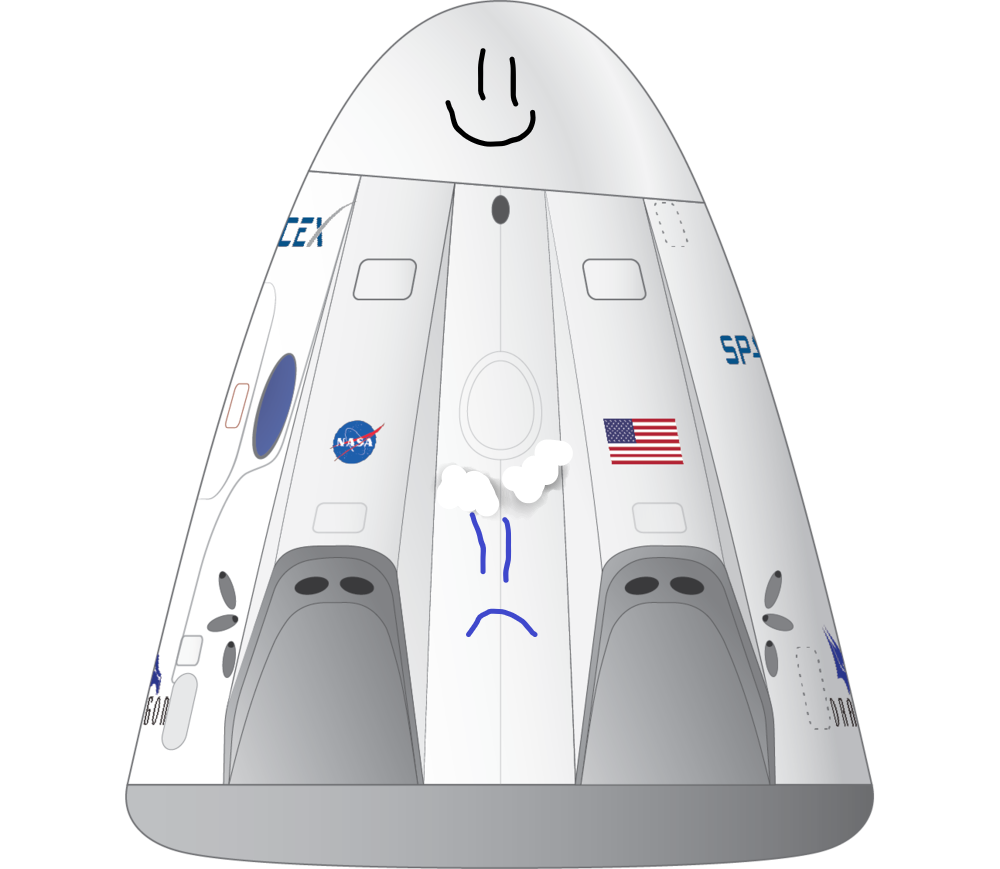

Hyperblog Tu blog
de cabecera
Éste es el título atractivo e interesante del post
Y este es el párrafo de inicio donde vamos a explicar las cosas increíbles que se pueden hacer con las ramas

Los blogs son la mejor forma e compartir información y tus ideas. Mucho más que ir a conferencias o salir en YouTube. Excepto si eres un rockstar, pero estadísticamente no lo eres...por ahora!!
Suscríbete y dale like